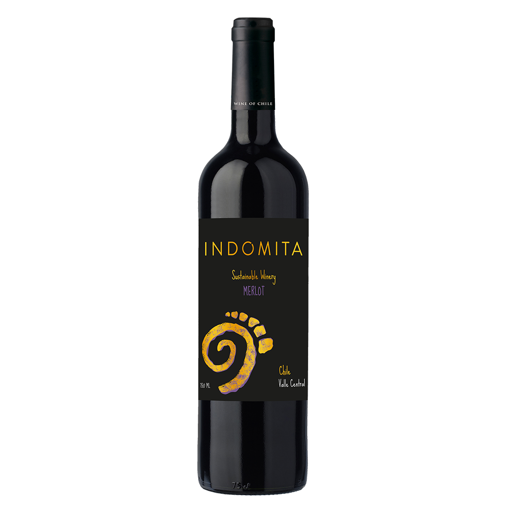
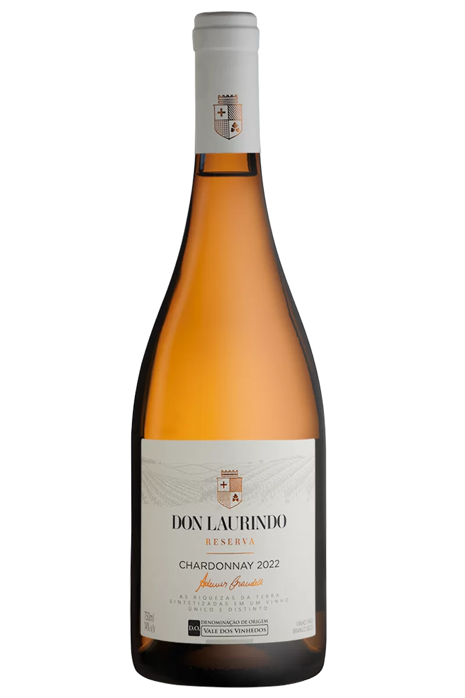
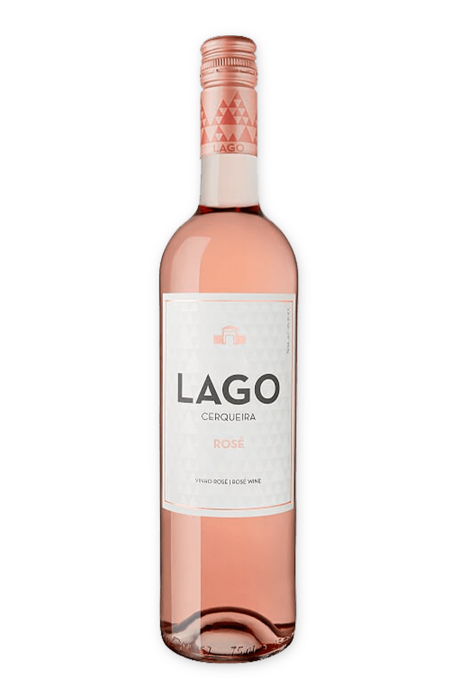

Nos dedicamos a criar excepcionais vinhos que apresentam o caráter e os sabores únicos de nossas vinhas. Nosso time é apaixonado por cada etapa do processo de vinificação, desde o cuidado cuidadoso das videiras até a idade delicada de cada safra.

Agnello Merlot
Vinho tinto rico e corpóreo com notas de cereja escura e ameixa.

Agnello Chardonnay
Um branco fresco e refrescante com pistas de maçã verde e fruta tropical.

Agnello Rosé
O vinho rosado, mais conhecido como rosé, produzido a partir de uvas tintas por diferentes estilos de vinificação.